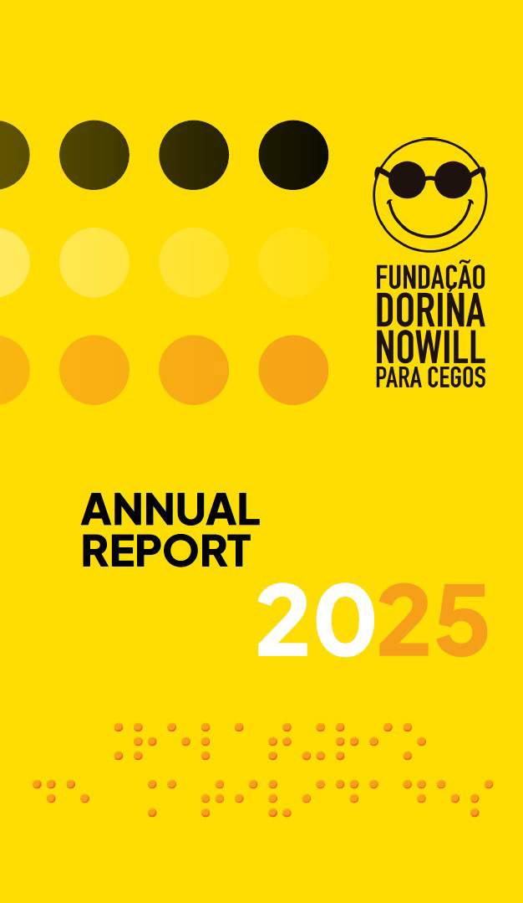

Annual Report 2025
MESSAGE FROM THE CHAIR OF THE BOARD OF TRUSTEES AND THE CHIEF EXECUTIVE OFFICER, página2
PURPOSE, VALUES, AND VISION, página3
VISUAL IMPAIRMENT AROUND THE WORLD, página3
ACCESS TO INFORMATION, página3
DORINATECA FUNDAÇÃO DORINA’S DIGITAL LIBRARY, página4
INCLUSIVE READING NETWORK, página4
LEGO® BRAILLE BRICKS, página4
ACCESS TO AUTONOMY, página4
ACCESS TO EDUCATION, página5
ACCESS TO EMPLOYMENT, página5
VISION PARTNERS, página7
BE PART OF THIS STORY, página8